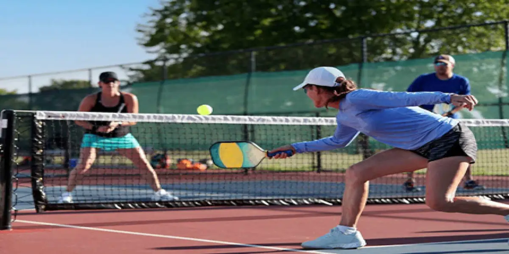

Welcome to Pickleball Hub
Pickleball is one of the fastest-growing sports in the United States. Whether you are a beginner or an experienced player, this site will help you learn about the game, equipment, rules, and places to play.
Why Pickleball?
Pickleball combines elements of tennis, badminton, and table tennis. It is easy to learn, fun for all ages, and can be played recreationally or competitively.
What You'll Learn
- The history and origins of pickleball
- The differences between paddle types and generations
- Rules, scoring, and gameplay fundamentals
- Resources for finding courts near you
Pickleball Fact Generator
Click the button below to learn a pickleball fact.